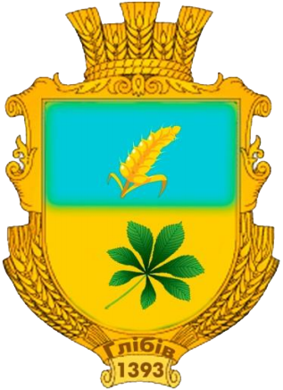
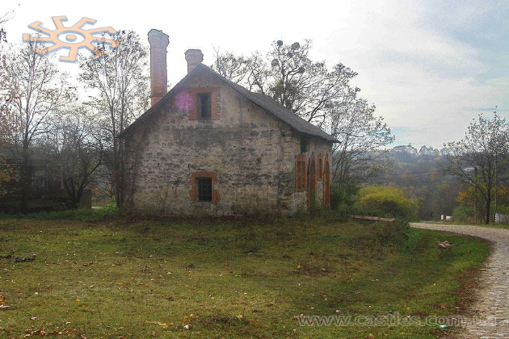
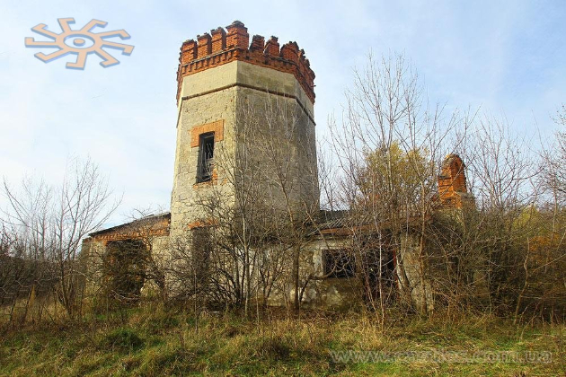
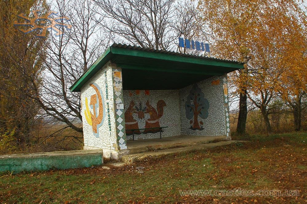

Адреса ради 32610, Хмельницька обл., Новоушицький р-н, с.Глібів
Засноване 1393 Населення 619 (станом на 01.01.2010) Площа 3,476 км² Густота населення 212,03 осіб/км²
Золотий щит розділений на дві частини. У верхній частині на блакитному фоні розміщений колосок, що нахилений з права на ліво – символ хліборобства та безкраїх полів, що оточують село. У нижній частині на золотистому фоні – каштановий листок. Він уособлює древній парк, історичну пам'ятку культури, що знаходиться у центрі села.
Прямокутне полотнище складається з двох частин. Верхня половина прапора блакитного кольору, нижня – жовтого. З правого боку розміщено литок каштану зеленого кольору, який уособлює древній парк, історичну пам'ятку культури, що знаходиться у центрі села. Блакитний колір символізує колір неба, вдосконалення духу, жовтий – родючість та процвітання.
Біля глібівської церкви - поховання 9-річного Миколи Львова і священиків.
Воїстину прекрасну споруду з дикого каменю і цегли, з високими коминами колишня кузня?
А хто його знає в радянські часи використовували під зерносховище.
Зараз, схоже, взагалі ніяк не використовують.
Коли зовсім здаля, навіть схоже на замкові руїни.
Але тільки в холодну пору: влітку, так розумію, хоч здаля, хоч зблизька, а схоже на джунглі.
Пролетарські білочки
Перша згадка про село Глібів датується 1393 роком. [2] Заснування Глібова пов'язане з монголо-татарською навалою. Втікаючи від Золотої Орди мешканці цих країв вибирали для поселення найглухіші («найглибші») лісові місця, тому і засноване село дістало назву Глібів. Першем володарем Глібова та належних тоді до нього сіл Гути Глібівської, Джурджівки, Мержіївки та Слободи був Василь Карачевський. У 15-16 століттях села був під владою Польської корони. Населення в основному займалося землеробством та скотарством. Путятін Юхим Васильович Восени 1793 року населенні пункти теперішньої Глібівської сільської ради разом з усією правобережною Україною внаслідок анексії входять до складу Російської імперії. Дуже часто змінюються володарі сіл. Ними були: Васильківський Адам, Янчевський Тадеуш, Рудьковський Іван, родина Зеленевських. У 1869 році села викупив граф Юхим Васильович Путятін, російський адмірал, державний діяч та дипломат. Він привіз із собою японців, які в центрі Глібова заснували прекрасний парк з оранжереями. Пізніше у володіння маєтком у Глібові та прилеглих селах вступив його син, відставний полковник гвардії Євген Юхимович Путятін. Відносини між мешканцями сіл і поміщиками були дуже непрості. У 1897 році граф продав глібівську маєтність князю В. Н. Львову, який володів селами до Жовтневого перевороту. На початку 20 століття остаточно склалася єдина зона сіл, що входять нині до Глібівської сільської ради. Селом тоді називався лише Глібів, так як мав дві церкви. Одну парафіяльну й церкву святого Василя Великого — домову церкву при маєтку Львових. Напередодні війни (1940 рік) у Глібові була поліклініка, двоє дитячих ясел, школа, цегляна майстерня. Німецько-радянська війна у Глібів вступила 4 липня 1941 року та затрималася на довгих 2 роки та 9 місяців. За роки окупації з сіл було вивезено 120 молодих людей на примусові роботи в Німеччину.